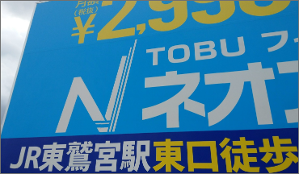

看板の種類
看板つ〜はんでは豊富な種類を取り揃えております。
看板の種類が分からなくても大丈夫！ 取り付けたい場所や、用途に合わせてご提案いたします。
看板の種類が分からなくても大丈夫！ 取り付けたい場所や、用途に合わせてご提案いたします。
取扱い看板一覧

プレート看板
アルミ複合板やアクリル板、塩ビ板、ステンレス板などの板（プレート）
マーキングフィルムやインクジェットシートなどを貼った、看板枠を使用しない板だけの看板。

立て看板
A型スタンド看板、電飾看板など、豊富な種類からお選びできます。気軽に置くことができ、店内・店外問わず、お客様へのアピールができます。

店舗幕・垂幕
遠くからでも認識できる懸垂幕や、店頭に飾ることのできる垂れ幕タペストリーなど。登りや、フラッグの素材としてお使いできます。

窓フィルム
曇り止めフィルム、防犯フィルム、遮熱フィルムなど、既存の窓ガラスに取り付けが可能です。ご要望に沿ったご提案をいたします。

クロス
サンプルをご覧になりながら、イメージに合うクロスをお選びいただけます。オリジナル壁紙、クロスの制作も可能です。サイズや、種類などもお気軽にご相談ください。

壁面看板
入口の上の一番目立つところに、屋号などをいれる、代表的な看板です。取り付け位置や、デザインなどもご希望を伺い、作り上げていきます。

袖看板
袖看板・突き出し看板は、自動車や歩行者に効果的です。お店の正面まで行かなくても移動している間に、店名を知らせることができ、集客UPに繋がります。

野立看板
歩行者・ドライバーの視認効果抜群！
集客したい店舗から離れた場所に、お客様を誘導するために立てる自立型の看板。広範囲のお客様を店舗に誘導することが可能です。

ポール看板
ポール看板とは、場所をとらず高く
掲げられるのが長所です。面板はアクリル板とFFシートの物があります。歩行者や車からの視認性が高く集客にも効果的な看板です。

文字サイン
LEDチャンネル文字や、カルプ切り文字などイメージに合わせたご提案が可能です。お店やオフィスの雰囲気を壊さず、シンプルながらも存在感があるのが特徴です。

ウインドウサイン
窓や自動ドアなどガラス面も看板・広告ツールとして有効に活用できます。半透明のものや、装飾性のあるもの、目隠し効果のあるものなど、ご希望に合わせてお作りします。
その他ご希望の看板がございましたら
お気軽にお問い合わせくださいませ。
お気軽にお問い合わせくださいませ。
看板印刷
既存看板の張り替えや、垂幕など、インクジェット出力のみも行っております。
用途に合わせたシートのご提案もできますのでお気軽にお問い合わせくださいませ。
用途に合わせたシートのご提案もできますのでお気軽にお問い合わせくださいませ。


FFシート

高所や屋外大型看板に簡単取付
アクリル板必要なしで取付。超簡単！
柔軟・軽量。地震でも、安全性が高い！
画面は汚れ知らず美しさ長期間保ちます。 用途
内照式看板・大型看板・袖看板など 耐久性 屋外使用で３～５年防炎
出力
機械の特性上、指定サイズから0.3%ほど誤差が生じる場合があります。
カラー CMYKフルカラー対応可能 写真なども鮮やかな色合い
高品質インク
溶剤インクは、染料を水でなく有機溶剤で溶かしているため耐候性
・耐水性・耐光性に優れています。 最大印字シート厚み・重さ
2450ｍｍ 0.45mm 510g/㎡
中長期用 塩ビシート

安全で汚れない取付簡単
柔軟・軽量。地震でも安全性が高い！
曲がった形状の所でも綺麗に貼れます。 用途
屋外の大型小型看板・不動産看板・駐車場看板など 耐久性
屋外使用で３～５年 出力
機械の特性上、指定サイズから0.3%ほど誤差が生じる場合があります。
カラー CMYKフルカラー対応可能 写真なども鮮やかな色合い
高品質インク
溶剤インクは、染料を水でなく有機溶剤で溶かしているため耐候性・耐水性・
耐光性に優れています。 最大印字シート 1300ｍｍ 0.1mm
ポスター用“合成紙”

光沢感なく屋内で見やすい
用途 屋内・お店のPOP、イベント・展示会・結婚式など 耐久性
屋内使用で１～２年 出力
機械の特性上、指定サイズから0.3%ほど誤差が生じる場合があります。
カラー CMYKフルカラー対応可能 写真なども鮮やかな色合い
高品質インク
溶剤インクは、染料を水でなく有機溶剤で溶かしているため耐候性・
耐水性・耐光性に優れています。 最大印字シート
1000ｍｍ 0.14mm 160ｇ/㎡
ターポリン印刷

軽量安価で耐久性抜群
テント生地でポリエステル繊維に塩化ビニールをコーディングした防水布
用途
横断幕・懸垂幕・タペストリー・バナー・展示会・工事用シートなど
耐久性 屋内外使用で３～５年防炎 出力
機械の特性上、指定サイズから0.3%ほど誤差が生じる場合があります。
カラー CMYKフルカラー対応可能 写真なども鮮やかな色合い
高品質インク
溶剤インクは、染料を水でなく有機溶剤で溶かしているため耐候性・
耐水性・耐光性に優れています。 最大印字シート厚み・重さ
2450ｍｍ 0.45mm 510g/㎡
電飾用乳半シート(電飾塩ビ)

光の透過性がよく夜間は綺麗に
用途 内照式看板、袖看板、ウィンドウディスプレイなど 耐久性
屋外使用で３～５年 出力
機械の特性上、指定サイズから0.3%ほど誤差が生じる場合があります。
カラー CMYKフルカラー対応可能 写真なども鮮やかな色合い
高品質インク
溶剤インクは、染料を水でなく有機溶剤で溶かしているため耐候性・
耐水性・耐光性に優れています。 最大印字シート厚み・重さ
1300ｍｍ 0.1mm 140g/㎡
ガラス面内貼りに ‶透明塩ビシート”

光の透過性がよく夜間は綺麗に
用途 ガラス面の内貼り用。高いビルの窓など 耐久性
屋外使用で３～５年 出力
機械の特性上、指定サイズから0.3%ほど誤差が生じる場合があります。
カラー CMYKフルカラー対応可能 写真なども鮮やかな色合い
高品質インク
溶剤インクは、染料を水でなく有機溶剤で溶かしているため
耐候性・耐水性・耐光性に優れています。
最大印字シート厚み・重さ 1300ｍｍ 0.1mm
マグネットシート

光の透過性がよく夜間は綺麗に
車やドアなどの鉄製面にペタっと簡単取り外し シート
マグネットシートの上に塩ビシートを貼り付けています。 耐久性
屋内外使用で３～５年 出力
機械の特性上、指定サイズから0.3%ほど誤差が生じる場合があります。
カラー CMYKフルカラー対応可能 写真なども鮮やかな色合い
高品質インク
溶剤インクは、染料を水でなく有機溶剤で溶かしているため耐候性・
耐水性・耐光性に優れています。 最大印字シート厚み
1000ｍｍ 0.8mm
価格は、形状などにより変動がございます。
その他、ご不明点や、お見積もりなどはお気軽にお問い合わせくださいませ。
その他、ご不明点や、お見積もりなどはお気軽にお問い合わせくださいませ。